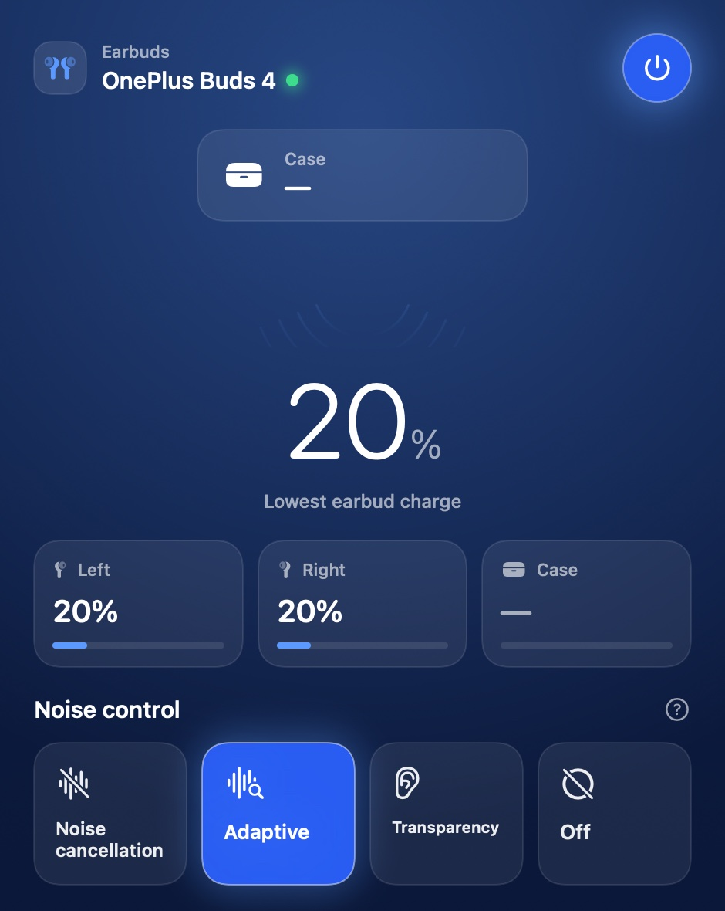
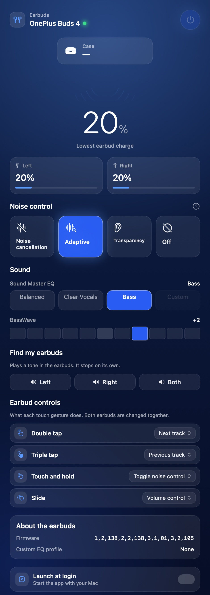
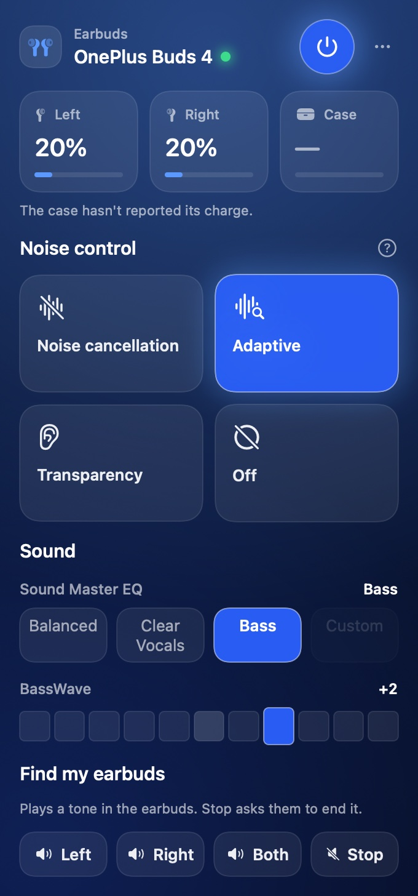
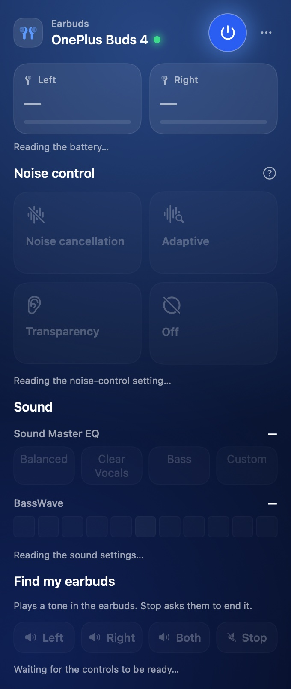

Your OnePlus Buds 4, controlled from the Mac.
Noise cancellation, Transparency, Adaptive, Sound Master EQ, BassWave, touch gestures and find-my-earbuds — the features the phone app has, on the machine you are already working on. Native SwiftUI, one window and one menu-bar item, no phone required.
- Free and open source (MIT)
- macOS 26 or later
- Apple silicon
- 2.3 MB download
- No accounts, no telemetry

Every image on this page is drawn by the app itself, and checked against a committed
golden by swift test — so the screenshots cannot drift from what ships.
A Mac app that actually talks to the earbuds.
macOS lists your buds in Bluetooth and stops there — connect, disconnect, see a battery figure. Everything the earbuds can do lives behind a vendor control channel that only the phone app speaks. This app speaks it too: it opens that channel directly and writes to the earbuds, then reads the setting back to confirm what took effect. Nothing is a placeholder.
Read back, every time
The earbuds accept any command and validate nothing, so a wrong one produces no error — just the wrong behaviour. Every mode and level here was set on real hardware and read back to confirm it.
Nothing leaves your Mac
No analytics, no crash reporting, no network code at all. The only thing the app opens is the RFCOMM control channel to your paired earbuds.
Small, and honest
2.3 MB, one window, one menu-bar item, launch-at-login if you want it. Written as a library plus a four-line executable so the protocol can be tested without the app running.
Everything the phone app can do
The same set, laid out the way the phone lays it out — so it is already familiar, and nothing needs learning.
Noise control
Noise cancellation with its own Low, Moderate, High and Auto levels, plus Transparency, Adaptive and Off — each one a real write to the buds, each one read back.
4 modes · 4 levelsSound Master EQ
The presets the firmware ships — Balanced, Clear Vocals and Bass — with the Custom slot shown as available only when the earbuds actually hold a saved profile.
3 presets · custom slotBassWave
A −5 to +5 bass emphasis, on a single slider you can nudge one step at a time with the keyboard or VoiceOver as well as the pointer.
−5 … +5Battery, per earbud
Left, right and case, with a headline reading for the weaker bud. A floating card fades in when the buds connect, in the style macOS uses for its own.
Left · right · caseIn-ear detection
Each slot reports whether that bud is in your ear, resting in the case, or being held — so "connected but silent" stops being a mystery.
In ear · in case · heldFind my earbuds
Plays a locating tone in the left, the right, or both earbuds. It stops on its own, so a lost bud under a cushion does not keep ringing.
Left · right · bothEarbud controls
Remap double tap, triple tap, touch and hold, and slide. Each gesture offers only the actions the firmware actually accepts for it, so nothing here can send a combination the earbuds ignore.
4 gesturesFirmware and profile readout
The firmware version each earbud reports, and whether a custom EQ profile is saved. Read-only, because there is no safe way to write the earbuds' flash.
Read-onlyTwo surfaces, one connection
A full window when you want it, a compact menu-bar panel when you don't. Both read the same live state, and the menu-bar item tucks itself away when the buds do.
Window · menu barScreens
Four modes, one row of levels, one EQ row, one gesture table. No menus to dig through.



Supported platforms
Straight answers, including the ones that are a no. The protocol is specific to this model of earbud, and the release build is Apple silicon only.
| Platform | Status | Details |
|---|---|---|
| macOS 26 (Tahoe) or later | Supported | The app targets the macOS 26 SDK and pins itself to the dark appearance, so what you see is what it draws. |
| Apple silicon | Supported | The download is a native arm64 build (M1 and later). Ad-hoc signed, so the first launch needs right-click → Open. |
| Intel Macs | Build from source | macOS 26 still runs on a few Intel models, but the release is arm64-only. Building on the machine (./build.sh) produces a working native binary. |
| macOS 15 and earlier | Not supported | Built against the macOS 26 SDK with no back-deployment, and the interface uses APIs that do not exist before it. |
| OnePlus Buds 4 | Supported | The model this was built and tested against, over the oppointeraction control channel. |
| Other OPPO / realme buds | Untested | They share parts of the same protocol and service, so it may work, but nothing here was verified on them and the app finds earbuds by the service they advertise. |
| iPhone, Android, Windows, Linux | Not applicable | This is the Mac side only. It does not replace the phone app — it sits alongside it. |
The control channel is exclusive
Whoever holds it wins: if the phone app has an open session with the earbuds, this app cannot open one until it is done. That is the hardware's rule, not a bug here.
The earbuds must be paired first
Pair them in System Settings → Bluetooth once. The app finds them by the vendor service they advertise, so an unpaired or disconnected pair simply shows as not connected.
Install in three steps
One click to download the disk image, one drag to Applications. Nothing to configure.
-
1
Download the disk image
OnePlus Buds 4.dmg — 2.3 MB, from the latest GitHub release. The newest version is always at the same link.
-
2
Drag it to Applications
The image opens with the app beside an Applications shortcut, on a styled background.
-
3
Right-click → Open once
The build is ad-hoc signed, so the first launch on a Mac that has never seen it asks for a confirmation. After that it opens normally, and the menu-bar item appears whenever your buds connect.
Rather build it yourself?
git clone, ./build.sh, or ./make-dmg.sh to
produce the disk image. Set SIGN_IDENTITY and
NOTARY_PROFILE and the same script gives you a Developer ID–signed,
notarized build.
How you can tell it works
The hard part of an app like this is not the interface — it is being wrong quietly. The earbuds accept any command and validate nothing, so a mistake shows up as the wrong mode, not an error. So the checks are built to disagree with the code.
- The earbuds' own readbacks. Every mode and level was set on real hardware and read back. The first version sent the wrong byte for Transparency and the firmware stored Noise cancellation — that is how it was found.
- 23 raw frames captured off the wire, committed with both length fields intact. Fixtures are captured, never typed: the app used to crash at launch because one hand-written fixture disagreed with its own header.
-
Tests, not a launch hook.
swift testruns the protocol checks, replays the crash as a regression test, and verifies the setter ids against the acknowledgements the hardware sends. - Golden images at the real widths — 340 points for the panel, 470 for the window. A padding change that clips a label fails the test instead of being noticed three commits later.
And what is not verified
Stated plainly, so nobody mistakes these for settled:
- What the find-my-earbuds tone sounds like. The command is sent and accepted; it was never confirmed by ear on both earbuds.
- "Slide = volume control". That label comes from the protocol write-up. That a slide changes volume rather than scrolling was not measured.
- Custom EQ is read-only. Nobody has ever transmitted the upload format and there is no documented delete, so the app reports whether a profile exists and never writes the earbuds' flash.
- Firmware updates are out of scope entirely: the over-the-air path is a separate channel and deliberately not touched. The app reads the version; it never writes firmware.
Give it a try
If your buds are paired with your Mac, you are about 30 seconds away.
Questions
The ones that come up, answered straight.
Can I control OnePlus Buds 4 from a Mac without the phone app?
Yes. The app opens the same vendor control channel the phone app uses and speaks the same protocol, so noise control, EQ, BassWave, gestures and find-my-earbuds all work with no phone involved.
Which macOS versions are supported?
macOS 26 (Tahoe) or later. The app is built against the macOS 26 SDK with no back-deployment, so macOS 15 and earlier are not supported.
Does it work with other OPPO or realme earbuds?
Untested. They share parts of the same protocol and advertise the same service, so it may work, but only OnePlus Buds 4 was verified against hardware. The app finds earbuds by the service they advertise.
Is the app free?
Yes. It is MIT licensed with the full source on GitHub. There are no accounts, no in-app purchases, no analytics and no telemetry.
Can the phone app and this app be used at the same time?
Not at the same time. The control channel is exclusive, so whichever app holds it wins. Quit the phone app's session if this app cannot open the channel.
Does it run on Intel Macs?
The download is Apple silicon only. macOS 26 still runs on a few Intel models, and building from source on the machine produces a working native binary.
Does the app update the earbuds' firmware?
No. Reading the firmware version is supported. Over-the-air updates run over a separate channel and are deliberately not touched, because the earbuds validate nothing and a bad write could brick them.